I loaded auto-mpg.csv with the File widget. It has 398 cars and 9 columns. I set the column types to match the list in the handout: cylinders, model_1 and origin are categorical, model_2 is text, and the rest are numeric.
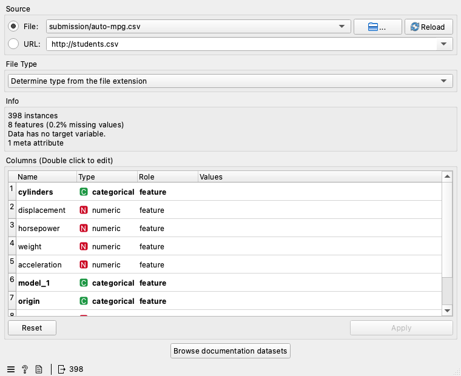
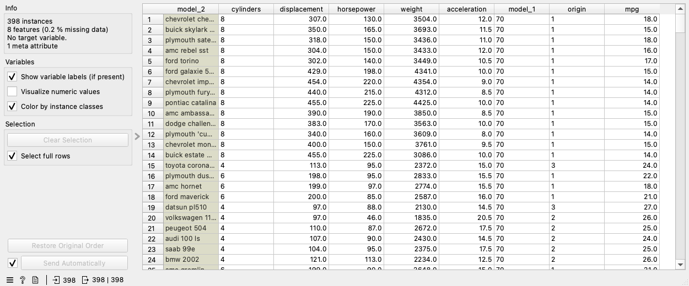
Each row is one car. Looking down the table, the cars from the early 1970s are mostly big 8 cylinder American cars with low mpg. I also noticed that horsepower has a few cells with a "?" where the value is missing, and that the same car name shows up more than once.
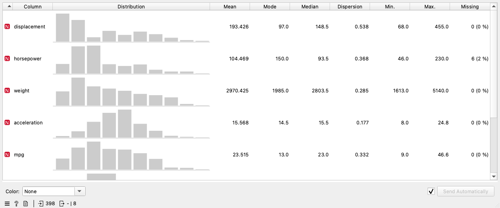
This gives a quick summary of every column. mpg goes from 9 to 46.6 with a mean of 23.5. Weight goes from 1613 to 5140. Displacement, horsepower and weight are all skewed to the right, meaning most cars are on the smaller side with a tail of big ones. Horsepower is the only column with missing data (6 values, about 2%). For cylinders, 204 cars have 4, 103 have 8, 84 have 6, and only 4 have 3 and 3 have 5.
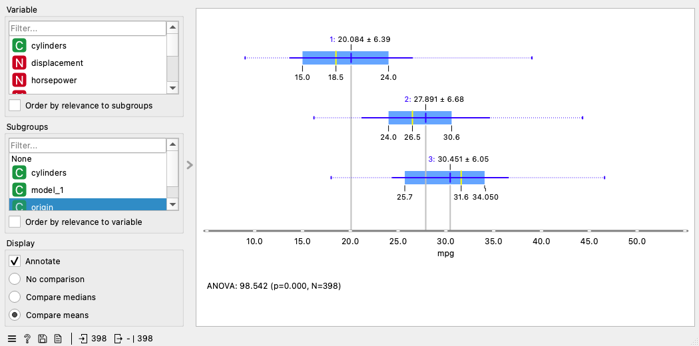
I grouped mpg by origin. Origin 1 has the lowest mpg (median 18.5), origin 2 is in the middle (26.5) and origin 3 is the highest (31.6). Going by the car names, origin 1 is American cars, 2 is European and 3 is Japanese, so the American cars in this data use the most fuel. Origin 1 is also the biggest group with 249 of the 398 cars.
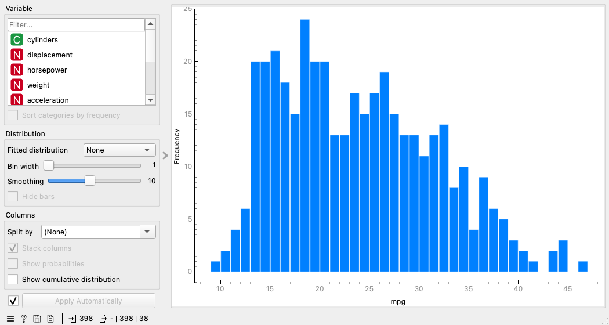
mpg is not symmetric. Most cars sit between about 13 and 30 mpg, and there is a longer tail on the right going up past 40. So there are a few very efficient cars but not many.
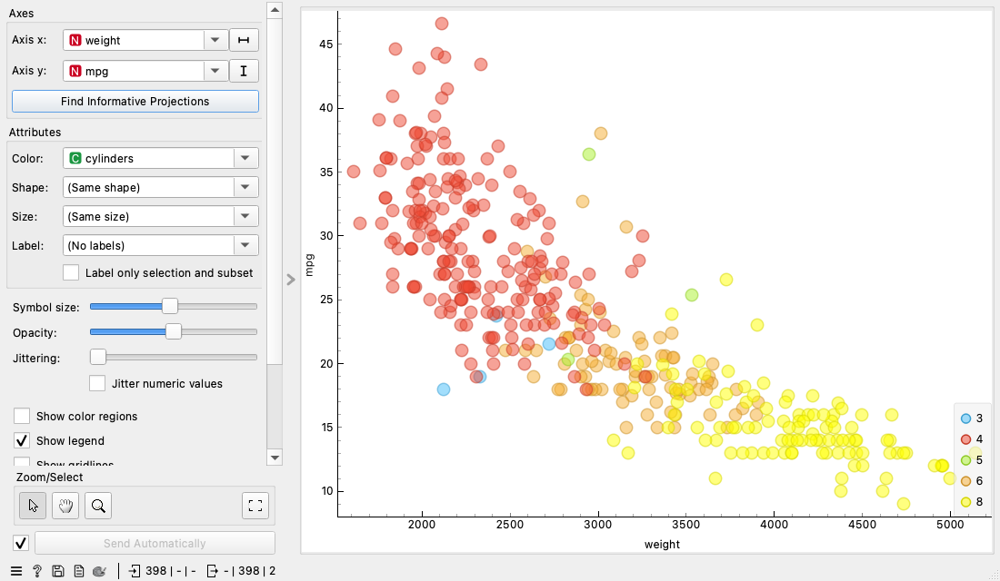
Heavier cars get lower mpg, and the relationship is strong (the correlation is -0.83). The colours show that the 8 cylinder cars are the heavy, low mpg group and the 4 cylinder cars are the light, high mpg group. The trend is curved rather than a straight line: mpg drops quickly at first and then levels off for the heaviest cars.
These are the things I found that would need cleaning:
| Problem | What I saw | Why it matters |
|---|---|---|
| Missing values | 6 cars have no horsepower (shown as ? in the table) | They need to be filled in or dropped before any analysis that uses horsepower |
| Misspelled makes | chevroelt, vokswagen, maxda, toyouta | The same make gets counted as different ones |
| Same make written different ways | chevrolet / chevy, volkswagen / vw, mercedes / mercedes-benz | Same issue, so I needed two rows for VW in step 2 |
| Names that are not really a make | hi 1200d, capri | Can't be matched to a manufacturer from the name alone |
| Car names repeat | 93 rows share a name with another row (for example several ford pinto rows from different years) | The handout says model_2 is unique, but it is not, so it can't be used as an ID |
| Codes with no labels | origin is 1, 2 or 3 and model_1 is a two digit year | They look like numbers but they are categories, so I set them to categorical in the File widget |
| Unclear column names | model_1 is the year and model_2 is the car name | Easy to mix up |
| Possible outliers | Three trucks at 9 to 10 mpg, and a few cars with very high mpg for their engine size | Looked at more closely in step 4 |
I used Create Class on the model_2 column to make a new class called car_make. For Chevy I used the substring "chev" because it matches chevrolet, chevy and the misspelled chevroelt all at once. VW needed two rows with the same class name, one for "volkswagen" and one for "vw". Everything that didn't match went into OTHER.
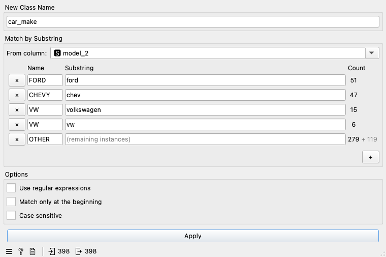
| Class | Substring used | Cars |
|---|---|---|
| FORD | ford | 51 |
| CHEVY | chev | 47 |
| VW | volkswagen, vw (two rows) | 21 |
| OTHER | (remaining instances) | 279 |
The counts match the handout exactly. One thing I noticed is that the misspelled "vokswagen" car ends up in OTHER, since it doesn't contain either VW substring. The handout's count of 21 for VW only works if that car is left out, so I kept it that way.
I sent the Create Class output to Data Table (1) and to Impute. In Data Table (1) I sorted by horsepower so the unknown values came to the top, and selected those 6 rows.
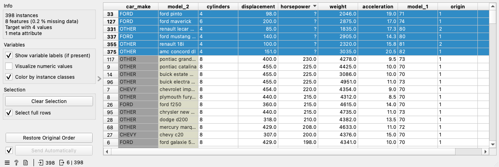
The selected rows go into the Data Subset input of Select by Data Index, and the Impute output goes into its Data input. That way Data Table (2) shows only those same 6 cars, but with whatever value Impute filled in. I tried the three options one at a time.
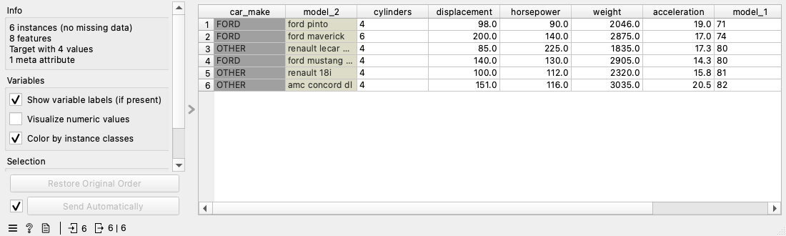
| Car | Cylinders | Displacement | Weight | Average | Model-based | Random |
|---|---|---|---|---|---|---|
| ford pinto | 4 | 98 | 2046 | 104.5 | 66.2 | 90 |
| ford maverick | 6 | 200 | 2875 | 104.5 | 91.9 | 140 |
| renault lecar deluxe | 4 | 85 | 1835 | 104.5 | 65.7 | 225 |
| ford mustang cobra | 4 | 140 | 2905 | 104.5 | 85.7 | 130 |
| renault 18i | 4 | 100 | 2320 | 104.5 | 71.9 | 112 |
| amc concord dl | 4 | 151 | 3035 | 104.5 | 79.7 | 116 |
The model-based option worked for me without connecting a Tree widget, because Impute already uses a simple tree by default, so I did not need to add one.
Which option seems to generate the most appropriate values to be filled in for the missing ones?
The model-based imputer (simple tree). It gives each car its own value based on the rest of that car's data, so the small 4 cylinder cars get lower numbers (the Ford Pinto gets 66.2) and the 6 cylinder Ford Maverick gets a higher one (91.9). That makes sense for these cars.
Average gives every car the same value, 104.5, which is the mean of the whole dataset including the big V8s. Five of the six cars are 4 cylinder, and the average horsepower for 4 cylinder cars in this data is only 78.3, so 104.5 is too high for them.
Random just picks an existing horsepower value by chance, so it has nothing to do with the car. In my run the Renault LeCar, the smallest car of the six, got 225. The values also change every time it runs.
I connected the Impute output to Scatter Plot (1) and looked at displacement against mpg. Most of the points follow a curve going down: the bigger the engine, the lower the mpg. One point sits well above everything around it, at a displacement of 262 and 38 mpg. Other cars with engines that size get roughly 15 to 25 mpg.
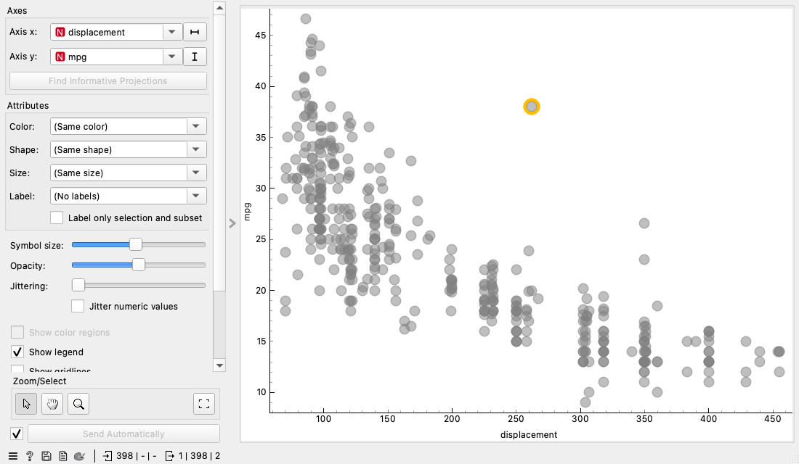
I selected that point and sent it to Data Table (3) to see which car it is.
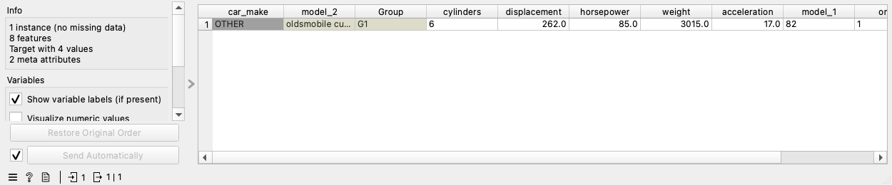
It is the oldsmobile cutlass ciera (diesel), a 1982 car with 6 cylinders, 85 horsepower and a weight of 3015.
Do you think this outlier is due to data entry errors or just a vehicle with unusual characteristics?
I think it is a vehicle with unusual characteristics, not a data entry error. The name says it is a diesel, and diesel engines get much better mileage than gas engines of the same size. Its other numbers back that up: 85 horsepower is low for a 262 engine, which is normal for a diesel. The other diesels in the data (the VW Rabbit and Dasher diesels, for example) also have very high mpg. It is also a 1982 car, and the newer cars in this data are more efficient in general. So the values look real, the car is just different from the gas cars around it.
Next I fed the Impute output into the Outliers widget. With the default method, Local Outlier Factor, my outlier was not flagged, so it stayed in the inliers. I tried the other methods and switched to Covariance Estimator, which does catch it.
| Method | Cars flagged | Flags the Oldsmobile diesel? |
|---|---|---|
| One Class SVM | 196 | Yes |
| Covariance Estimator | 40 | Yes |
| Local Outlier Factor | 39 | No |
| Isolation Forest | 40 | Yes |
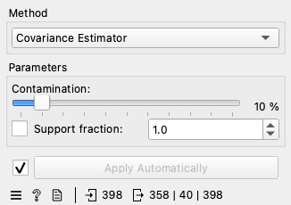
With Covariance Estimator at 10% contamination the widget splits the data into 40 outliers and 358 inliers. Following the sample workflow, Scatter Plot (2) is connected to the Outliers output, so it shows the cars that were taken out.
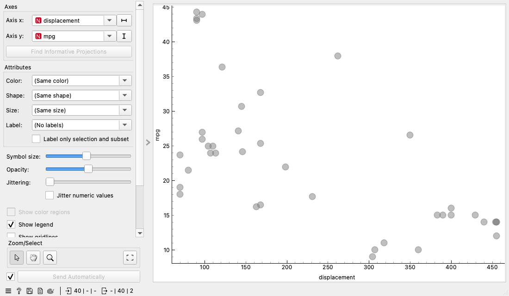
To double check that it is really gone from the data that continues on, I also looked at displacement against mpg for the inliers.
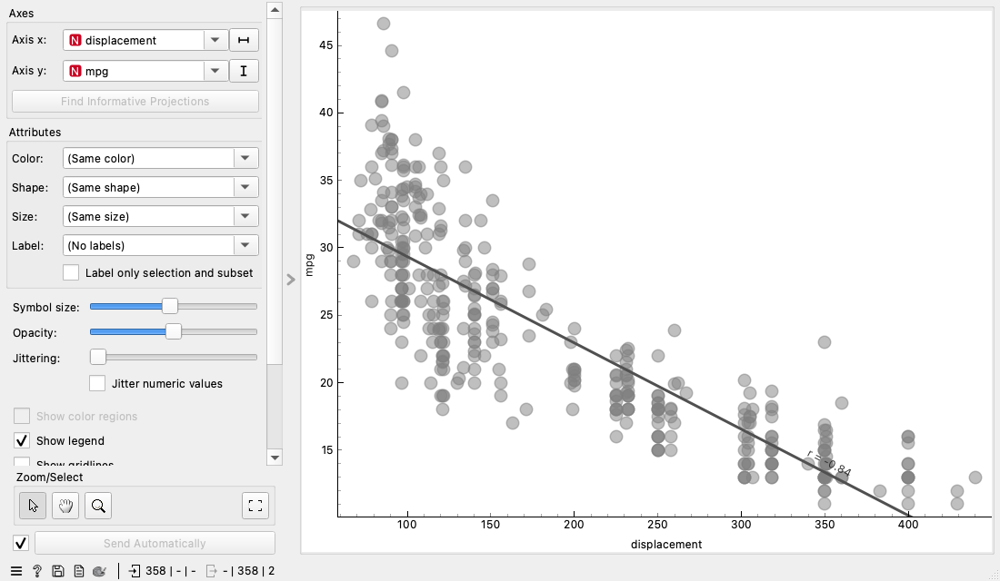
So yes, the outlier I found is eliminated. One thing to keep in mind is that the widget always removes about 10% of the data, so it also took out cars I would not have called outliers by eye, like the pickup trucks, the rotary Mazdas and the other diesels.
I sent the inliers to Feature Constructor and made a new numeric column called Lper100k using the formula from the handout:
Lper100k = 100 * 3.785411784 / (1.609344 * mpg)
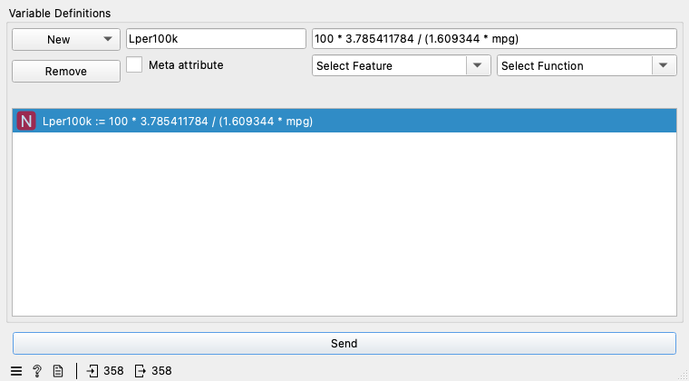
I put brackets around the bottom part so that mpg is divided, not multiplied. A quick check: chevrolet chevelle malibu has 18 mpg, which comes out as 13.07 L per 100 km. The values go from 5.3 to 21.4, which is a realistic range.
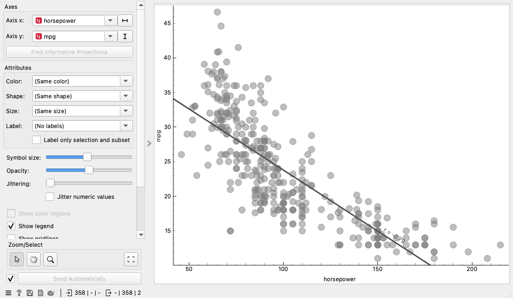
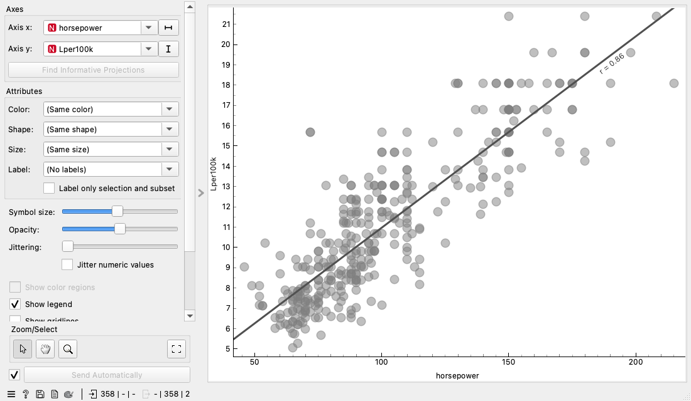
The two plots show the same cars but they tell the story differently. With mpg, the points curve. At low horsepower mpg is spread out a lot and falls fast, and at high horsepower it flattens out, because mpg can't go below zero. With Lper100k the direction flips, since it measures fuel used instead of distance travelled: more horsepower means more fuel burned. The points also line up along the line much better. Each extra bit of horsepower adds about the same amount of fuel use across the whole range.
Which of the graphs appears more linear in nature? What are the implications?
Horsepower against Lper100k is more linear. Orange's regression line gives r = 0.86 for Lper100k and r = -0.79 for mpg, so the Lper100k relationship is stronger, and the mpg points bend away from their line at both ends.
The implication is that fuel use per distance is the better thing to work with if I want to use a straight line method, like linear regression or a correlation. A straight line would describe Lper100k well, but for mpg it would predict too high in the middle and too low at the ends. It also means mpg can be misleading when comparing cars. Going from 10 to 15 mpg saves a lot more fuel than going from 30 to 35 mpg, even though both are a 5 mpg improvement. Lper100k shows that difference directly.
Last, I saved this dataset with the Save Data widget as auto-mpg-lper100k.csv.
I opened the saved csv with a new File widget and set car_make as the target.
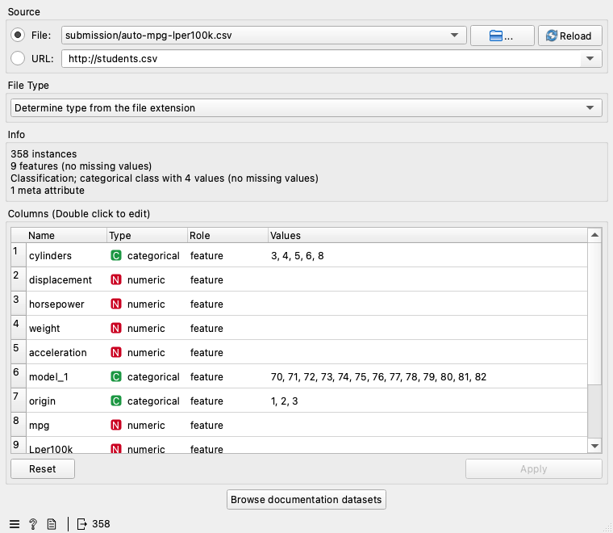
Then I connected it to a Distributions widget (named Step 6), set the fitted distribution to Normal and split by car_make. This file has the 358 inliers from step 4, so the class sizes are a little smaller than in step 2.
| car_make | Cars | mpg | Lper100k | displacement | horsepower | weight | acceleration |
|---|---|---|---|---|---|---|---|
| FORD | 50 | 19.9 (5.7) | 12.8 (3.4) | 231.3 (95.7) | 108.3 (33.7) | 3274.9 (795.3) | 15.4 (2.4) |
| CHEVY | 44 | 20.4 (6.2) | 12.6 (3.6) | 234.5 (98.7) | 110.3 (31.7) | 3286.2 (783.0) | 15.6 (3.0) |
| VW | 17 | 29.2 (4.7) | 8.3 (1.2) | 96.2 (8.7) | 67.8 (9.9) | 2036.9 (180.2) | 16.2 (3.0) |
| OTHER | 247 | 24.3 (7.5) | 10.8 (3.6) | 181.4 (98.5) | 100.8 (34.1) | 2875.5 (819.7) | 15.6 (2.4) |
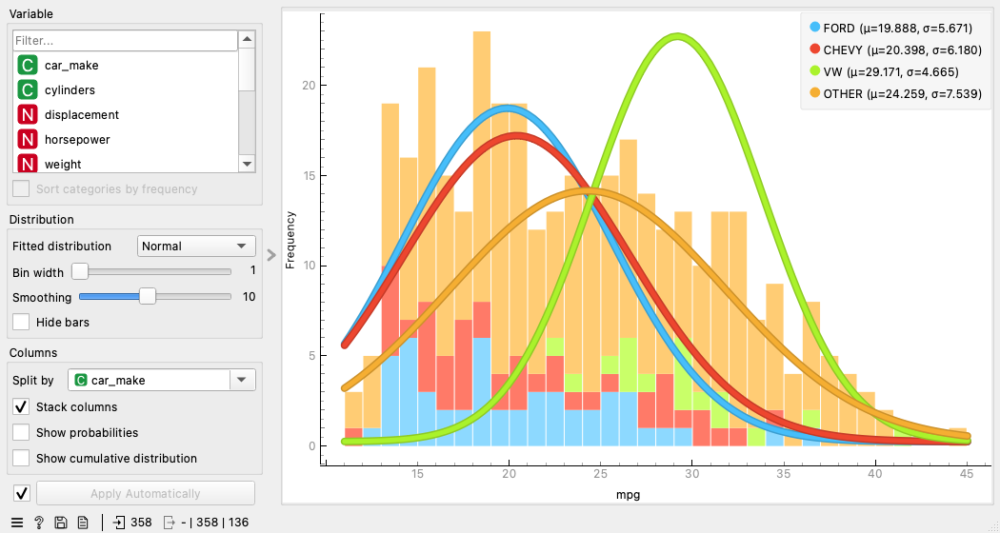
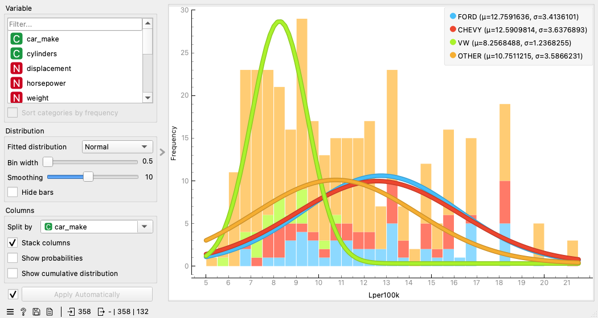
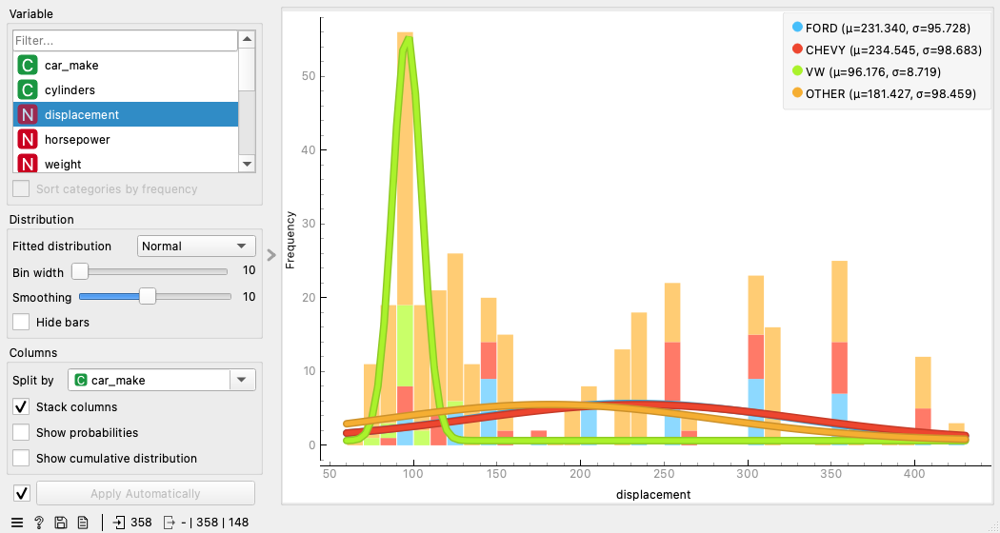
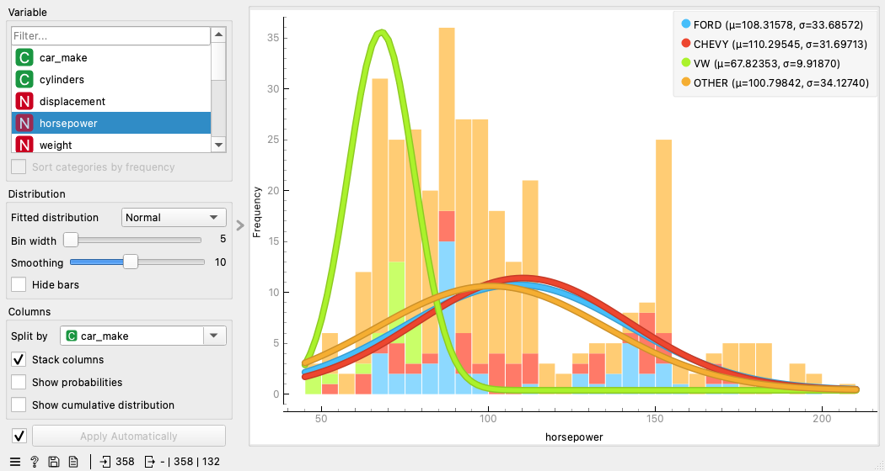
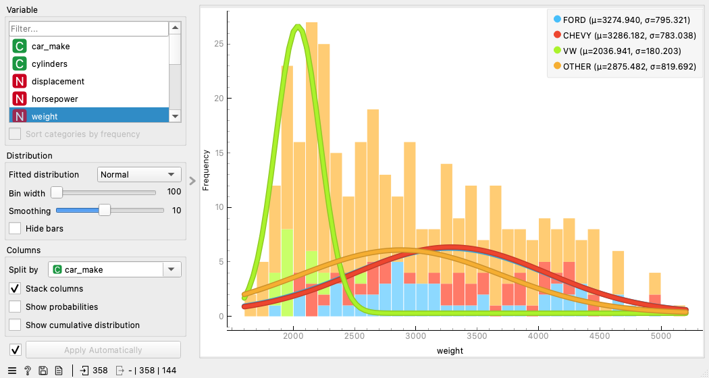
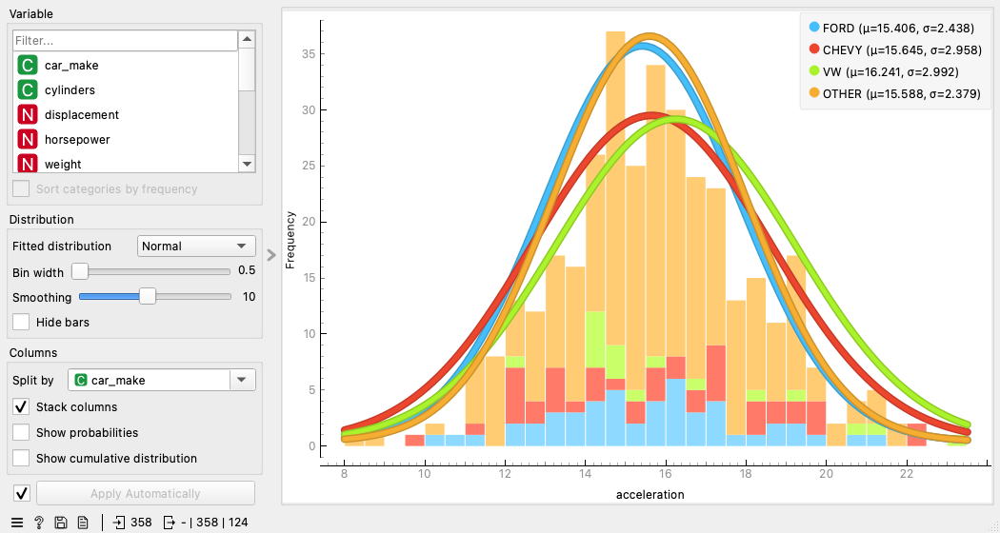
What I noticed about the differences between the classes:
I labelled each part of the workflow with a text box and an arrow.
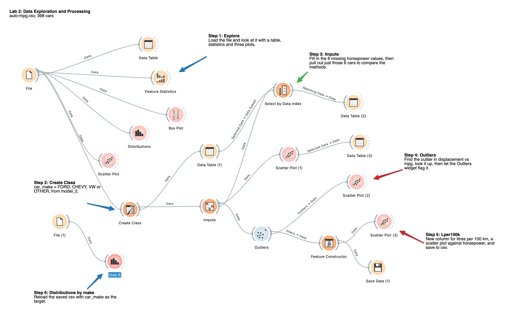